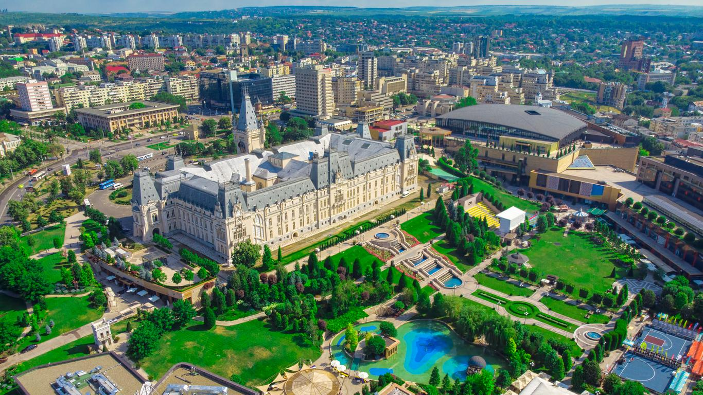
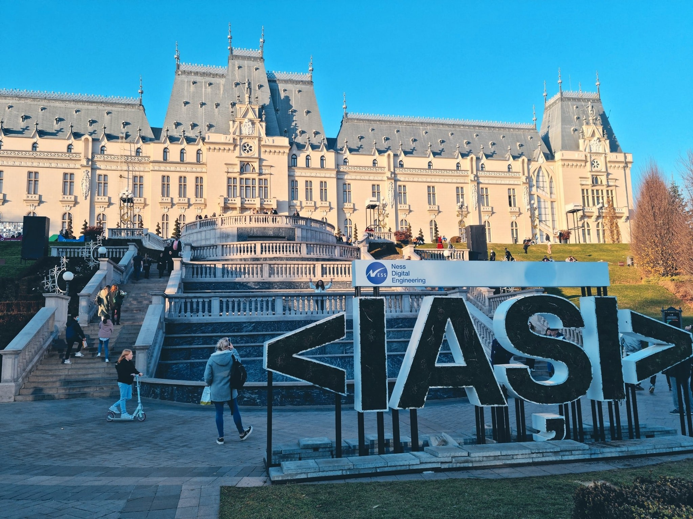
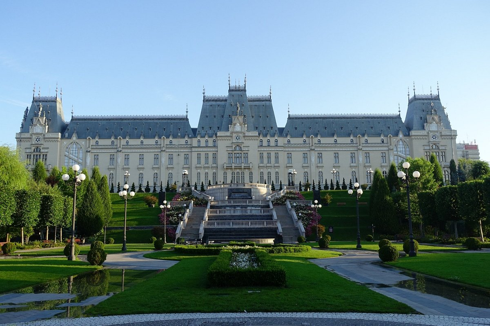
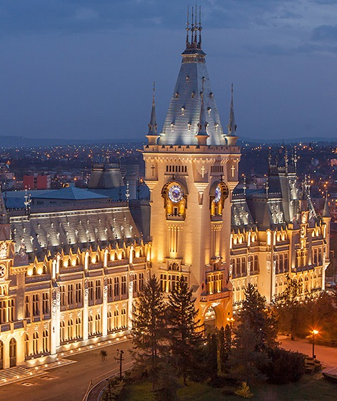
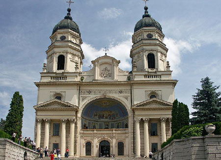
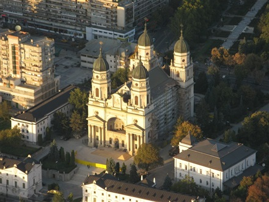

IAȘI
Iaşi un municipiu situat în partea de nord-est a României, la zona de contact a Podişului Central Moldovenesc cu Câmpia Jijiei Inferioare, în lunca şi pe terasele râului Bahlui. Iaşiul este reşedinţa judeţului Iaşi, precum şi capitala istorică a Moldovei.
Iași este centrul cultural, economic și academic al Moldovei. Aici funcționează Universitatea Alexandru Ioan Cuza, una din cele mai prestigioase instituții academice din România, precum și alte patru universități publice și șapte particulare.


PALATUL CULTURII
Palatul Culturii din Iași este o clădire emblematică, construită, în perioada 1906 - 1925, în perimetrul fostei curți domnești medievale moldovenești, pe locul fostului palat domnesc. Edificiul a servit inițial drept Palat Administrativ și de Justiție. În anul 1955, destinația clădirii a fost schimbată într-una culturală, devenind gazda unor instituții culturale din Iași.
Ceasornicul din turnul Palatului Culturii a contribuit în mod deosebit la faima clădirii. Acesta moștenea amintirea orologiului instalat în turnul portii Curții Domnești la 1728 și care a dat, multă vreme, ritmurile orașului. Vitraliile cadranelor ceasului sunt decorate cu cele 12 zodii astrale. Potrivit arhitectului I.D. Berindey, cei doi oșteni, pictați în frescă şi care străjuiesc ceasul, sunt plăieșii lui Dragoș Vodă, descălecătorul Moldovei.Citiți în Ziarul Metropolis > https://www.ziarulmetropolis.ro/curiozitati-despre-palatul-culturii-din-iasi/


CATEDRALA MITROPOLITANA IAȘI
Catedrala Mitropolitană din Iași, cu hramul Sfânta Parascheva, Întâmpinarea Domnului și Sfântul Mucenic Gheorghe, este biserica catedrală a Mitropoliei Moldovei și Bucovinei, una dintre cele șase catedrale mitropolitane ortodoxe din România.
Biserica a fost ridicată pe locul unde s-au aflat două biserici mai vechi: Biserica Albă (din secolul al XV-lea) și Biserica Stratenia (din secolul al XVII-lea). S-a lucrat mai întâi între anii 1833 și 1839, după planurile arhitecților Gustav Freywald, Bucher și Mihail Singurov.[3] Pe 23 mai 1857, bolta centrală s-a prăbușit, biserica rămânând într-o stare precară pentru următoarele două decenii.